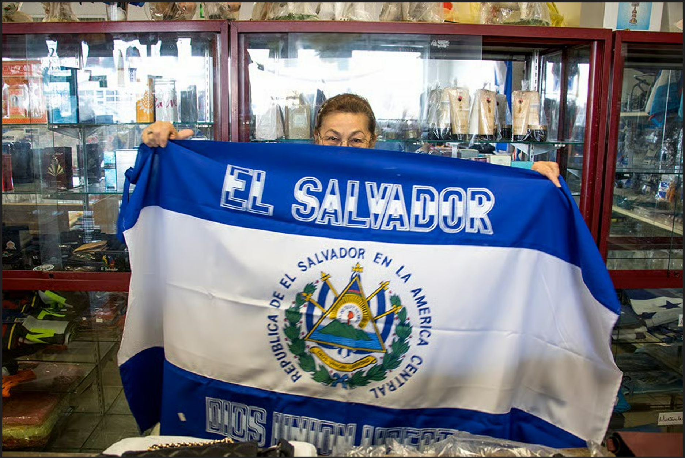
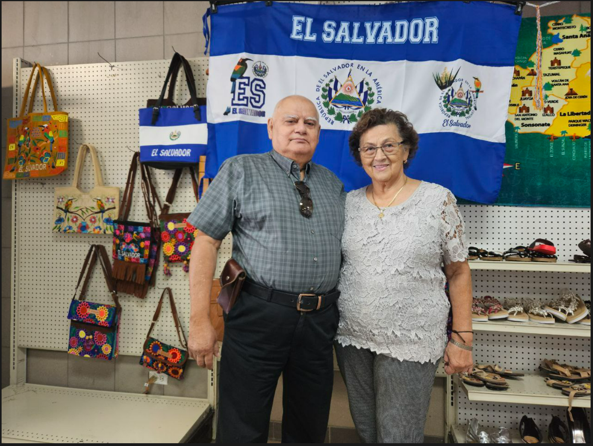

Más de 30 años de servicio comunitario documentado por medios locales e internacionales.
Cobertura destacada
"Tienda Salvadoreña es un negocio situado en Denver, Colorado, y fue el primer comercio con productos de El Salvador fundado en esa ciudad."
– Diario El Salvador, 2023 · Leer artículo"La mayoría de las personas que visitan el negocio se llenan de nostalgia al ver las comidas tradicionales que encuentran."
– Diario El Salvador, 2023"People come here from all over Colorado, Wyoming and Nebraska to buy cheeses and souvenirs that he imports from home."
– Denverite, 2018 · Leer artículo"On East Colfax, next to the trendy Bellwether coffeeshop, Jorge Romero and his wife, Delia, have run a Salvadoran grocery for more than 25 years."
– Denverite, 2018Imágenes y créditos

Foto © Kevin Beaty / Denverite

Foto © Kevin Beaty / Denverite, 2018

Foto: Nicolle Menéndez / Diario El Salvador
Artículos destacados
Impacto comunitario
Delia y Jorge han sido reconocidos por su servicio a la comunidad, especialmente durante emergencias como los terremotos en El Salvador. La tienda ha servido como punto de encuentro cultural y apoyo para generaciones de familias.
Reconocimientos
- Primer negocio salvadoreño en Denver (1991)
- Destacado en medios locales e internacionales
- Apoyo comunitario durante crisis humanitarias
- Más de 30 años sirviendo a la comunidad hispana